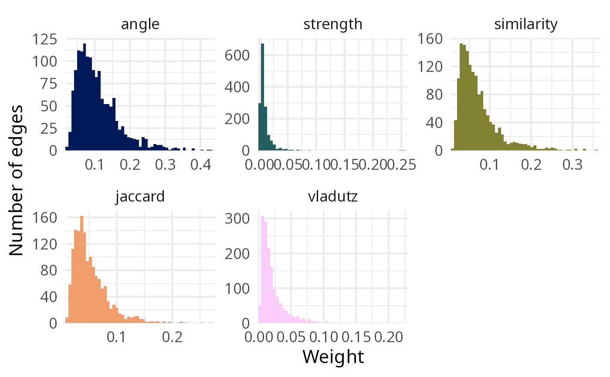
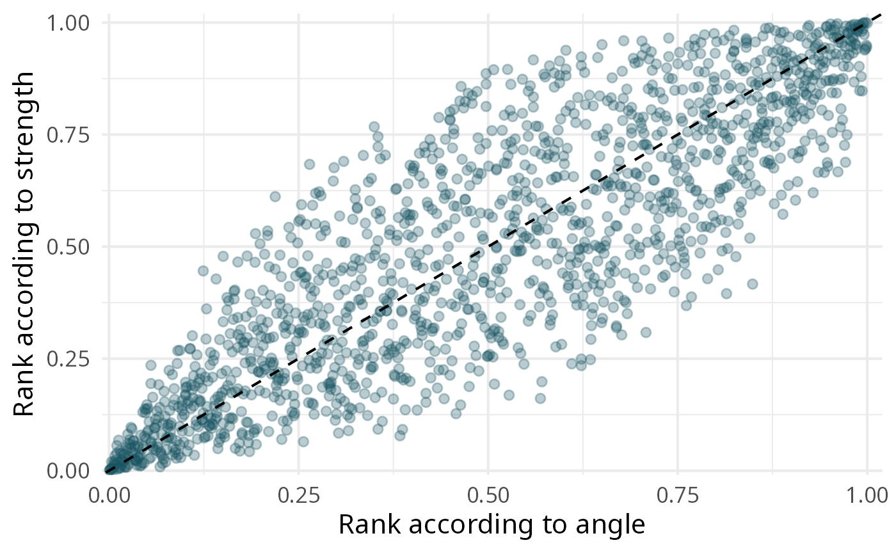

Two plots to compare coupling measures, in the spirit of the histograms and scatterplots of (Shen et al. 2019) :
type = "distribution": one histogram of the weights per measure, each with its own horizontal scale (the measures do not share a scale);type = "scatter": the ranks of the pairs of nodes according to two measures (xandy). Points on the diagonal are ranked identically by both measures; ranks, rather than raw weights, are used because the scales differ.
It needs the ggplot2 and scico packages.
Usage
plot_weights(
edges,
type = c("distribution", "scatter"),
x = NULL,
y = NULL,
bins = 50
)Arguments
- edges
A named list of edge tables, for instance from
compute_couplings().- type
"distribution"(default) or"scatter".- x, y
For
type = "scatter", the names of the two measures inedges(by default the first two).- bins
Number of bins of the histograms.
![[Experimental]](figures/lifecycle-experimental.svg)
References
Shen S, Zhu D, Rousseau R, Su X, Wang D (2019). “A Refined Method for Computing Bibliographic Coupling Strengths.” Journal of Informetrics, 13(2), 605–615. https://linkinghub.elsevier.com/retrieve/pii/S1751157716300244.
See also
Other tools to compare coupling measures:
compute_couplings(),
correlate_weights(),
merge_weights(),
overlap_top_weights(),
summarise_weights()
Examples
library(biblionetwork)
edges <- compute_couplings(Ref_stagflation, "Citing_ItemID_Ref", "ItemID_Ref",
weight_threshold = 2)
plot_weights(edges)

plot_weights(edges, type = "scatter", x = "angle", y = "strength")
